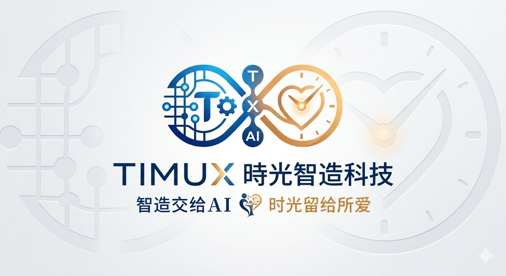

如何谈需求、切 MVP、交代 AI、稳定交付产品
智造交给 AI，时光留给所爱
而是把自己放在产品负责人、客户翻译者、AI 指挥者、交付验收者的位置。
从业务流程和真实痛点出发，不急着卖系统。
把模糊表达整理成角色、流程、数据和 MVP。
给上下文、边界、优先级和验收标准。
客户说“想数字化”，马上开始讲 ERP、CRM、AI OCR、库存、报表。
谁在做？用什么表？哪一步最痛？哪里最容易出错？怎么算有效果？
公司规模、岗位角色、服务流程、客户类型、收入模式。
最耗时、最容易错、最影响收款、老板最常亲自处理。
纸质单据、Excel、微信/企微、系统、照片、表单、人工规则。
谁拍板、什么时候看 Demo、预算怎么定、能不能先试点。
客户说：我们想做一套 AI 管理系统，现在很多事情都很乱，希望你们帮忙数字化。
请交代 AI：
PoC 不是完整系统。PoC 是让客户一眼看出：“你懂我的业务，也能解决我的痛点”。
工单、报价、库存、排班、客户、KPI、财务报表都想要。
工单照片 → AI OCR → 人工确认 → 客户版报价 → 手机审批/定价。
客户想要：工单、报价、库存、排班、客户管理、KPI、消息通知、AI OCR、财务报表。
请交代 AI：
先问：它像我们做过的哪个项目？能抽出哪套产品母版？
考勤、单据识别、消息入口、管理员手机操作、人工确认、薪资报表。
工单、报价、定价、派工、客户版明细、后续库存扩展。
相同：后台 + 手机高频操作 + AI 识别 + 人工确认。不同：业务数据和决策流程。
帮我做吊杆车维修厂系统，要有工单、报价、库存、客户管理、AI 识别，越完整越好。
背景：维修厂现在用手写工单，老板每天要整理成客户报价，还要判断加价和派工，手机使用频率高。
目标：先规划 MVP，不做完整 ERP。第一版展示“拍照 → OCR → 人工确认 → 客户版报价 → 手机审批”。
参考：铭将安保的后台 + 手机操作 + AI 识别人工确认流程。
约束：库存、KPI、法规提醒先放到后续阶段。
交付：模块清单、数据表草案、MVP 流程、第一周开发顺序。
拆业务轮廓、痛点问题、Demo 切入点。
整理角色、流程、数据、待确认事项。
切第一版、第二版、先不做。
读项目记忆/技术文档，按现有架构改。
先复现、找根因、提出方案，再修改。
列测试、备份、回滚、线上验证步骤。
完整管理、复杂配置、大量表格、经营报表。
高频操作：审批、派工、定价、查询、回报。
高频流程少一层，就是更好用一分。
入口多一层，用户会困惑。
页面内再选上班/下班，减少操作层级。
有效反馈格式：
好的 AI/合作伙伴要回到根因，不只是修表面。
直达入口不是目标；稳定识别用户身份才是目标。
要确认实际页面是否调用，不要把参考资料当需求。
服务 running 不等于成功；构建产物路径错仍会 502。
改动要守范围，不要顺手重构或回退其他功能。
DB Schema
→ prisma validate / migration or db push
→ API module / service / DTO
→ backend build
→ curl 或接口测试
→ frontend page / integration
→ frontend build
→ browser/mobile 实测
→ 集成验证
不是比 AI 更会写代码，而是比 AI 更懂现场、更懂取舍、更懂验收。
Timux 时光智造｜智造交给 AI，时光留给所爱